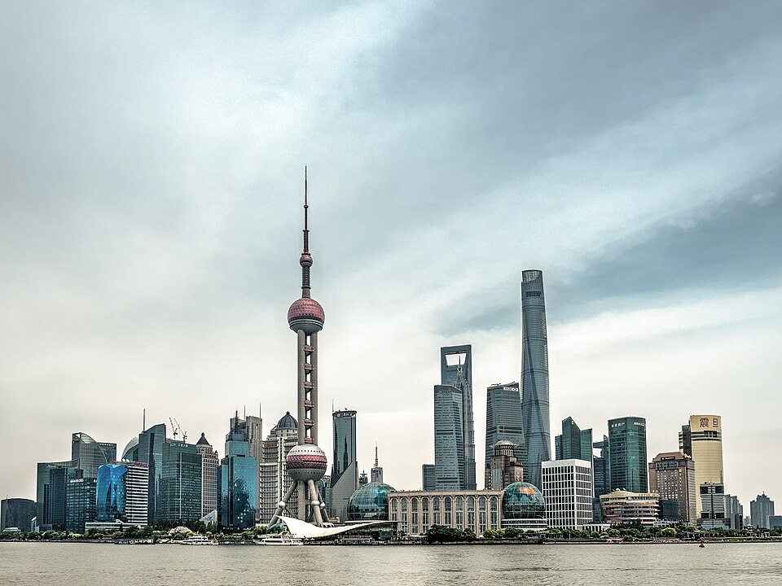
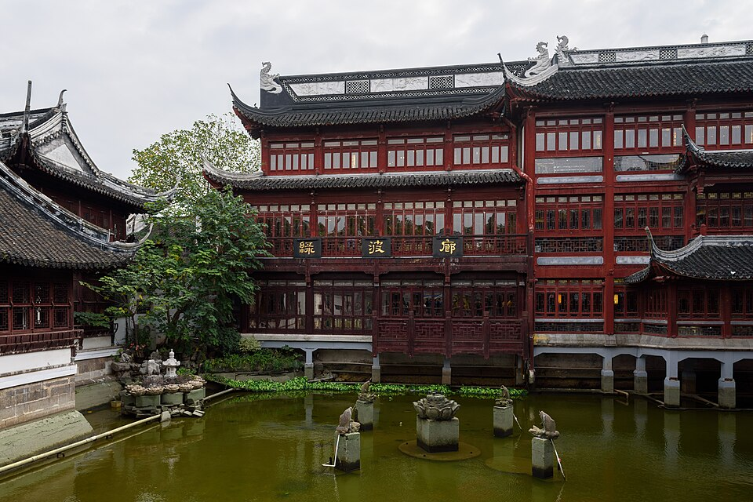
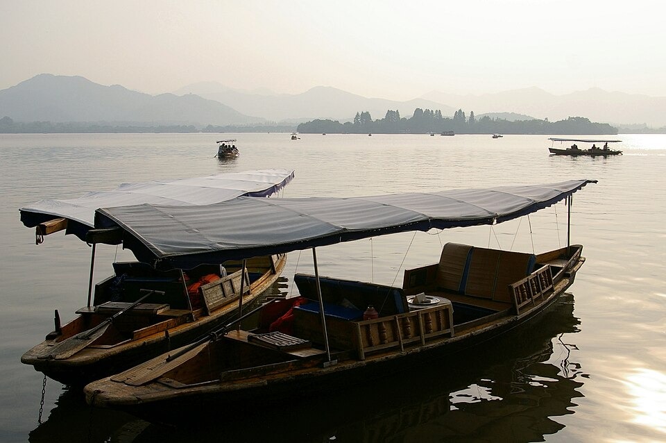
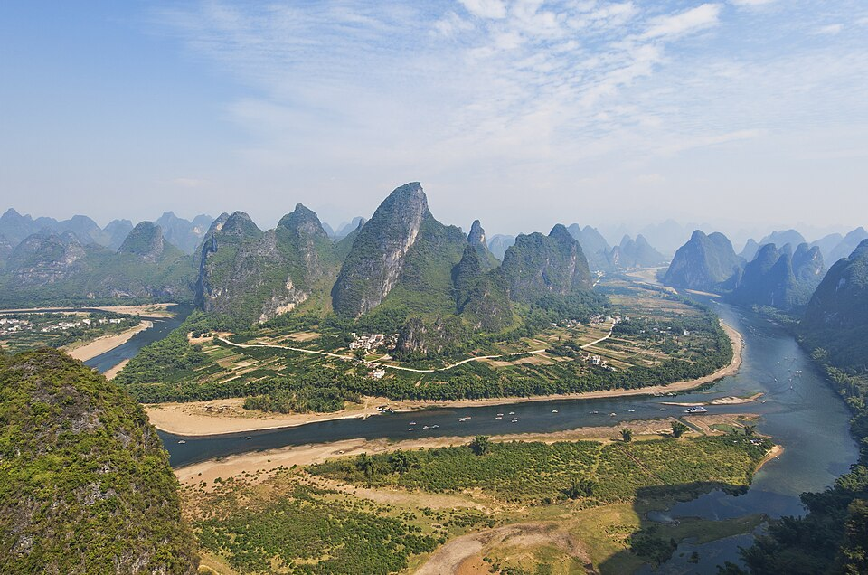
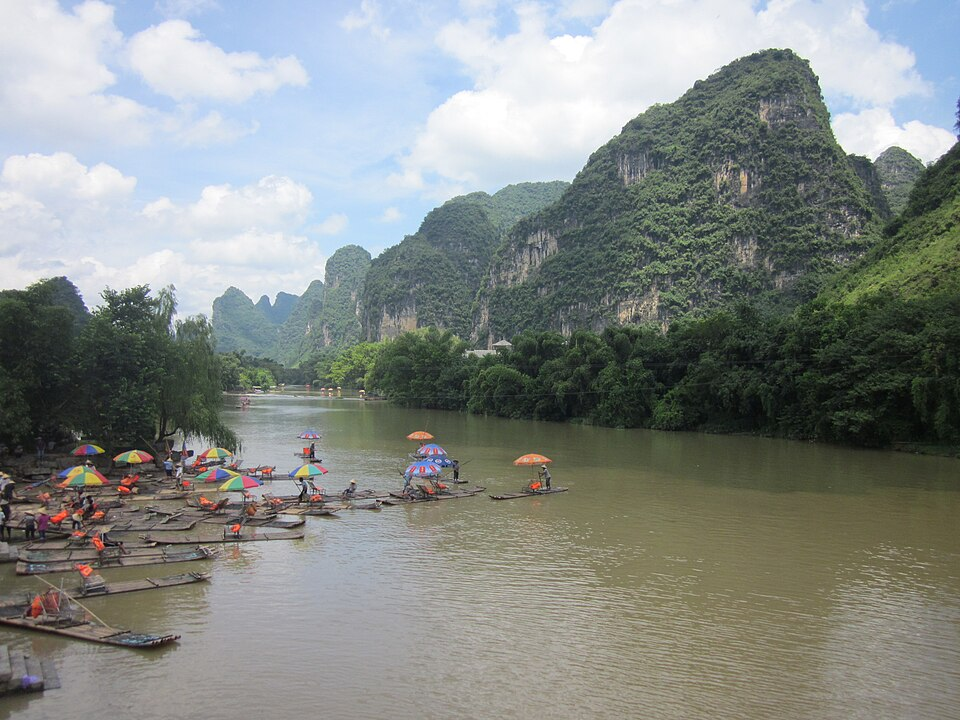
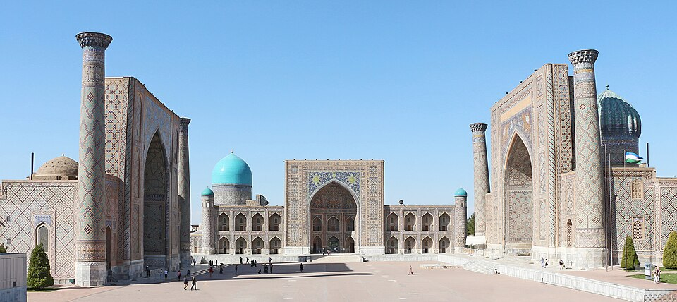

Osaka, Hiroshima и домой через Китай
Коротко
Как правильно: по-русски «О́сака», ударение на первый слог (словари Зализняка и Агеенко; «Оса́ка» Викисловарь помечает как устаревшее). По-японски 大阪, Ōsaka: первое «о» долгое, «Оосака».
Osaka или Kyoto - что общительнее? По общей репутации Osaka: открытые, шумные, с юмором люди, город еды, вечером людно в Namba и Dotonbori. Kyoto сдержаннее и раньше засыпает.
Сколько дней в Osaka: двух с половиной хватит: пт полдня, сб под крышей (ливень), вс город. Отель пт-пн, как ты и предложил.
Рейс Hiroshima → Shanghai: прямой есть (China Eastern, пн и пт), но с 25.10 по 31.01.2027 приостановлен, последний вылет пт 23.10 в 13:30 - ты в это время в Kyoto. Из Hiroshima в Shanghai быстрее всего через аэропорт Fukuoka: 1 ч 37 поездом, вечерние рейсы 18:00 и 18:15.
Hiroshima: лучше 2 ночи пн-ср, а не вечер вс. В Hiroshima вс-вт дожди (16, 24 и 8 мм), а ср 28 сухо - Miyajima в сухую погоду и в будни. Музей Мира под крышей, его можно в дождь.
Через Китай: Shanghai теплее Пекина (там к началу ноября ночью около нуля). В Shanghai сухо 26-30.10, с 31.10 дожди.
Kyoto → Osaka в пятницу
| Как | После выезда в 13:00 (Yahoo, пт 23.10) | В пути | Куда |
|---|---|---|---|
| JR Special Rapid (新快速), брони нет, по Suica, платформа 5 | 13:15 → 13:43, 13:30 → 13:58, 13:45 → 14:13, 14:00 → 14:28, 14:15 → 14:43 | 28 мин | Osaka (Umeda) |
| Экспресс Thunderbird, место с бронью, платформа 7 | 14:10 → 14:36 (13:10 слишком близко к выезду) | 26 мин | Osaka (Umeda) |
| Shinkansen, место с бронью | 13:16 → 13:30, 13:31 → 13:45 | 14 мин | Shin-Osaka, оттуда ещё пересадка на JR до Osaka |
Бронировать не нужно: Special Rapid ходит каждые 15 минут, мест с бронью в нём нет, едешь по Suica. Если хочется гарантированное место с чемоданом - Thunderbird 14:10, билет в автомате JR на станции за пару минут.
Япония: три варианта
| A. Hiroshima 2 ночи | B. Hiroshima на день | C. Как ты предложил | |
|---|---|---|---|
| Osaka | пт-пн, 3 ночи | пт-чт, 6 ночей, один отель | пт-вс, 2 ночи |
| Hiroshima | пн-ср, 2 ночи | ср 28 на день | вс-ср, 3 ночи |
| Miyajima | ср 28, сухо, будни | ср 28, сухо, будни | вт 27, дождь 8 мм |
| Вылет в Shanghai | ср 28 вечером, из Fukuoka (или Kansai) | чт 29, из Kansai | ср 28 вечером |
| Смен отеля | 2 | 1 | 2 |
A. Osaka пт-пн, Hiroshima пн-ср (рекомендую)
Погода: Open-Meteo, 21.10 22:08. Дальше 7 дней прогноз слабый.


| День | Где и что |
|---|---|
| пт 23 | Kyoto → Osaka Выезд из Granvia в 13:00 (отель дал поздний выезд). JR Special Rapid 13:15 → 13:43 или 13:30 → 13:58, 28 мин без пересадок до станции Osaka (Umeda), без брони, по Suica, платформа 5. Чемодан оставить в отеле до заселения. Вечером Dotonbori. ☀️ Osaka 0 мм, +24/+12 |
| сб 24 | Osaka под крышей Ливень весь день: рынок Kuromon, крытая улица Tenjinbashisuji (2,6 км, местные izakaya), Музей быта Osaka (квартал эпохи Edo внутри здания), подземные улицы Umeda. 🌧 Osaka 46 мм, +24/+19 |
| вс 25 | Osaka: город Почти сухо: замок Osaka и парк, старый район Shinsekai (kushikatsu), вечер Dotonbori. 🌦 Osaka 3 мм, +26/+20 |


| День | Где и что |
|---|---|
| пн 26 | Osaka → Hiroshima Из Osaka 1 ч 42 с пересадкой на синкансэн в Shin-Osaka (от Shin-Osaka 1 ч 25 без пересадок). Дождь, поэтому днём Музей Мира и Атомный купол: музей под крышей. 🌧 Hiroshima 24 мм, +22/+20 |
| вт 27 | Hiroshima Небольшой дождь: сад Shukkeien, замок Hiroshima, вечером okonomiyaki. Полдня работа. 🌧 Hiroshima 8 мм, +26/+15 |
| ср 28 | Miyajima → Shanghai (через Fukuoka или Kansai) Сухо и будни: утром Miyajima (JR 27 мин + паром 10 мин). Дальше два пути в Shanghai. Через Fukuoka: Hiroshima 14:03 → аэропорт Fukuoka 15:40 (1 ч 37), рейсы 18:00 → 19:00 (Spring) или 18:15 → 19:30 (China Eastern). Через Kansai: Hiroshima 13:49 → аэропорт Kansai 16:27 (2 ч 38), рейсы 19:00 → 20:25 или 22:10 → 23:40. Прямой рейс Hiroshima → Shanghai есть (China Eastern, пн и пт 13:30), но с 25.10 по 31.01 он приостановлен (официальный сайт аэропорта Hiroshima). ☀️ Hiroshima 0 мм, +18/+8 |
B. Один отель в Osaka, Hiroshima на день
| День | Где и что |
|---|---|
| пт 23 - вс 25 | Osaka Как в варианте A. |
| пн 26 - вт 27 | Osaka, работа, Nara по желанию Nara в будни: из Osaka 50 мин (JR) или из Namba 39 мин (Kintetsu). С 24.10 там раз в год выставка сокровищ Shosoin. 🌧 Osaka 6 мм, +28/+16 |
| ср 28 | Hiroshima и Miyajima на день Единственный сухой день в Hiroshima. Из Osaka 1 ч 42 в одну сторону, Miyajima ещё 37 мин. Около 4,5 часа в поездах за день, зато без смены отеля. ☀️ Hiroshima 0 мм, +18/+8 |
| чт 29 | Osaka → Shanghai Osaka → аэропорт Kansai: Haruka 54 мин без пересадок. В Shanghai днём. ☀️ Osaka 0 мм, +19/+10 |
C. Как ты предложил: в Hiroshima вечером в вс
| День | Где и что |
|---|---|
| пт 23 - сб 24 | Osaka 2 ночи Пт город, сб ливень - под крышей. |
| вс 25 | Вечером в Hiroshima Как ты предложил: днём Osaka, вечером синкансэн 1 ч 25 от Shin-Osaka. 🌧 Hiroshima 16 мм, +23/+21 |
| пн 26 - вт 27 | Hiroshima, Miyajima Оба дня с дождём (24 и 8 мм). Музей Мира под крышей, Miyajima лучше во вт. 🌧 Hiroshima 24 мм, +22/+20 🌧 Hiroshima 8 мм, +26/+15 |
| ср 28 | Hiroshima → аэропорт Kansai → Shanghai 13:49 → 16:27, вечерний рейс в Shanghai. Минус варианта: сухая среда уходит на дорогу. ☀️ Hiroshima 0 мм, +18/+8 |
Отель в Osaka, пт 23 - пн 26: Minami (Shinsaibashi и Namba)
Umeda (Kita) - север: вокзал, офисы, торговые центры. Неон, Dotonbori, бары и ночная жизнь - на юге, в Minami (Shinsaibashi, Namba). Между ними 17 минут на метро Midosuji. Granvia Osaka стоит в здании вокзала Osaka, то есть в Umeda.
1 Hotel Nikko Osaka · 2 The Gate Hotel · 3 W Osaka · 4 Dotonbori, мост Ebisubashi · 5 Granvia Osaka и вокзал Osaka (Umeda)
| Отель | Оценки | Кровать | До Dotonbori пешком | Тишина по отзывам | 3 ночи |
|---|---|---|---|---|---|
| Hotel Nikko Osaka | 8,9 (4 997) · TA 4,1, сон 4,3 | king, 20 м², некурящий | 9 мин; метро Shinsaibashi под отелем | звукоизоляция хорошая, иногда слышно коридор | $500 |
| The Gate Hotel Osaka by Hulic | 9,3 (251) · новый, 2026 | super-king, 33 м², некурящий | 11 мин; лифт прямо в метро | тихо (отзывов мало); бар на крыше, 28 этаж | $1 347 |
| W Osaka (Marriott) | 9,2 (553) · TA 4,8, сон 4,85 | king, 40 м², некурящий | 15 мин | тихо по оценкам сна; живой бар в отеле | $1 850 |
| Hotel Granvia Osaka (для сравнения, Umeda) | 8,3 (2 515) | на офиц. сайте некурящий double только 27 этаж, queen 25 м², ¥165 500 | 54 мин пешком, 17 мин метро | иногда шум из коридора | $572 (Booking) |
Booking 22.10 21:45, 1 взрослый, 23-26.10, цена без твоего Genius (в твоём аккаунте может быть ниже). Тишина - сводка отзывов Booking и оценка сна Tripadvisor. Пешком до моста Ebisubashi (Dotonbori) - OSRM. Фото номеров - по ссылке на Booking.
Из Shinsaibashi: Kyoto 13:15 → Shinsaibashi 14:03 (JR Special Rapid + метро Midosuji, 48 мин); до Shin-Osaka (синкансэн на Hiroshima) 13 мин без пересадок; до аэропорта Kansai около часа. W Osaka - сеть Marriott: если Marriott засчитает челлендж, эти 3 ночи пойдут в зачёт.
Китай и дорога домой: три варианта
1. Shanghai + Hangzhou, домой прямым (рекомендую)



| День | Где и что |
|---|---|
| чт 29 | Shanghai Сухо. Набережная Bund и вид на Pudong, старые улицы бывшей французской концессии, сад Yu Yuan. ☀️ Shanghai 0 мм, +22/+13 |
| пт 30 | Hangzhou на день Скоростной поезд около часа (время уточню по расписанию 12306). Озеро Xihu, чайные деревни Longjing на холмах. Последний сухой день перед дождями. ☀️ Hangzhou 0 мм, +28/+15 |
| сб 31 - вс 01 | Shanghai под крышей Дожди: музеи, рестораны, массаж. Ночью вылет домой: China Eastern 01:20 → Barcelona 07:40 (13 ч 20) или Air China 00:35 → 07:25 (13 ч 50). 🌧 Shanghai 14 мм, +22/+15 |
2. Shanghai + природа Guilin и Yangshuo


| День | Где и что |
|---|---|
| чт 29 - пт 30 | Shanghai Два сухих дня в городе. ☀️ Shanghai 0 мм, +26/+18 |
| сб 31 | Shanghai → Guilin → Yangshuo Рейсы 2 ч 40 - 3 ч, например 11:30 → 14:25. Дальше Yangshuo: карстовые горы вдоль реки Li. 🌦 Guilin 1 мм, +33/+24 |
| вс 01 - пн 02 | Yangshuo Сплав по реке Li, велосипед вдоль реки Yulong среди гор. Сухо, но жарко, до +33. ☀️ Guilin 0 мм, +33/+20 |
| вт 03 | Домой через Пекин Guilin 21:50 → Beijing → Barcelona ср 04.11 08:05 (2 ч 55 + 12 ч). ☀️ Guilin 0 мм, +26/+17 |
3. Shanghai → Samarkand → домой

| День | Где и что |
|---|---|
| чт 29 - сб 31 | Shanghai Как в варианте 1, с Hangzhou в пт. |
| день X | Shanghai → Tashkent Прямой China Eastern 13:40 → 18:40, 8 ч (Kiwi показал на 03.11, другие дни проверю). Дальше Samarkand поездом. |
| +2-3 дня | Samarkand → домой Tashkent → Baku → Barcelona 03:30 → 09:45 (2 ч 50 + 5 ч 55) или через Istanbul 16:50 → 23:50 (5 ч 20 + 3 ч 55). Все перелёты короче 10 часов. |
Погода в Китае
| Где | 29-30.10 | 31.10-03.11 |
|---|---|---|
| Shanghai | сухо, +22...+26 | дожди, +17...+22 |
| Hangzhou | сухо, +24...+28 | дожди, +15...+24 |
| Guilin / Yangshuo | сухо, +32...+33 | сухо, +26...+33 |
| Huangshan (гора) | сухо, +18...+21 днём, ночью +5...+10 | дожди, днём +6...+14 |
| Beijing | +12...+17 днём, ночью +2...+3 | днём +4...+9, ночью около 0 |
Что держать в голове
- Въезд в Китай по российскому паспорту, безвиз до 31.12.2027. На регистрации в Kansai показывай российский паспорт для Китая, из Японии выезд по украинскому.
- Web Summit 9-12.11. Дома в Barcelona будешь: вариант 1 - 02.11, вариант 2 - 04.11, вариант 3 - примерно 04-05.11. Неделя дома до Lisbon остаётся только в варианте 1.
- Перелёт Shanghai → Barcelona 13 ч 20. Ты не любишь больше 10 часов подряд; если это важно, вариант 3 через Узбекистан делит дорогу на перелёты по 3-8 часов.
- Отель Osaka на пт-пн не забронирован, сб 24 - выходной.
- Природа в Китае по погоде: Huangshan сейчас холодный (на вершине +3...+14, с 31.10 дожди), Zhangjiajie с 30.10 холодные дожди - не советую. Guilin сухой, но жаркий.
Поезда: Yahoo!乗換案内, 21.10 22:15. Погода: Open-Meteo, 21.10 22:08. Перелёты: Kiwi.com, 21.10-22.10, только время; рейс Hiroshima - Shanghai: hij.airport.jp, 22.10. Отели: Booking 21.10 22:12, Tripadvisor (Marriott). Пешком: OSRM. Ударение: Викисловарь, Википедия со ссылкой на словари Зализняка и Агеенко. Фото: Wikimedia Commons, автор и лицензия под каждым. Карта: Esri. Ничего не бронировалось.